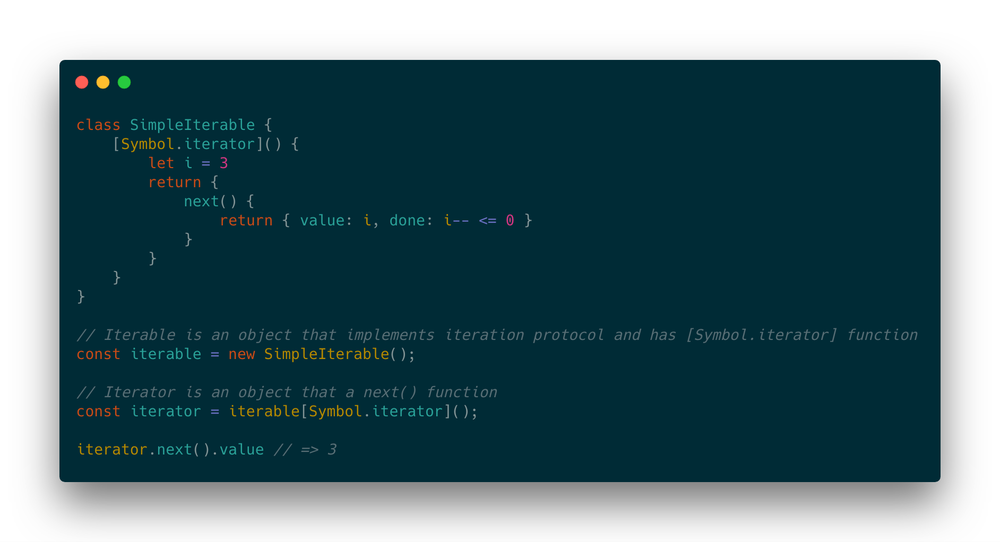
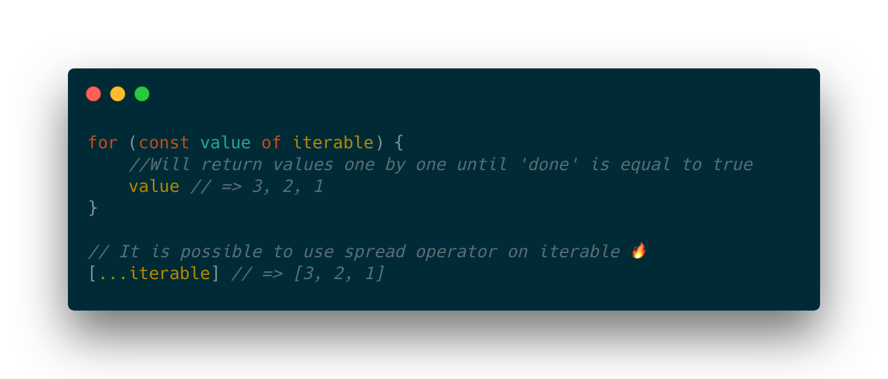
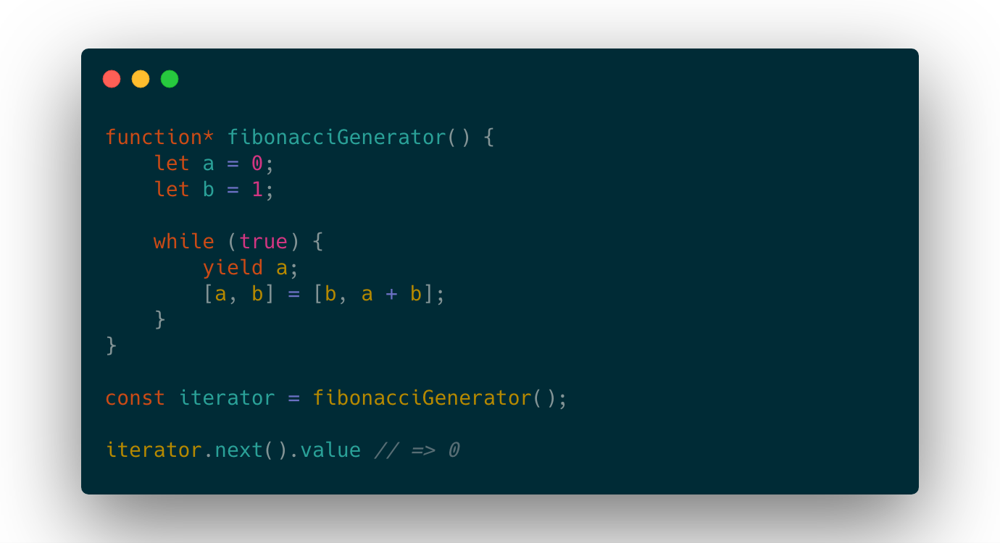
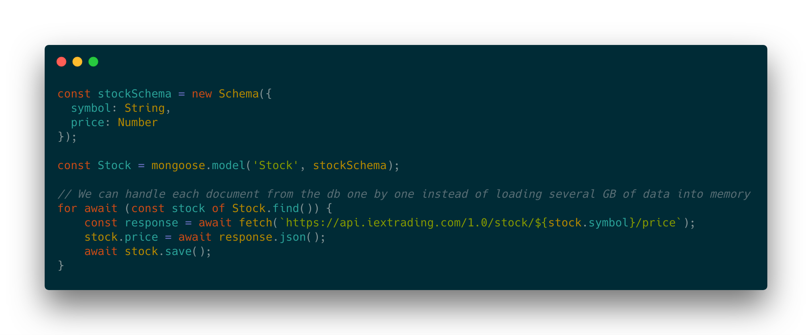
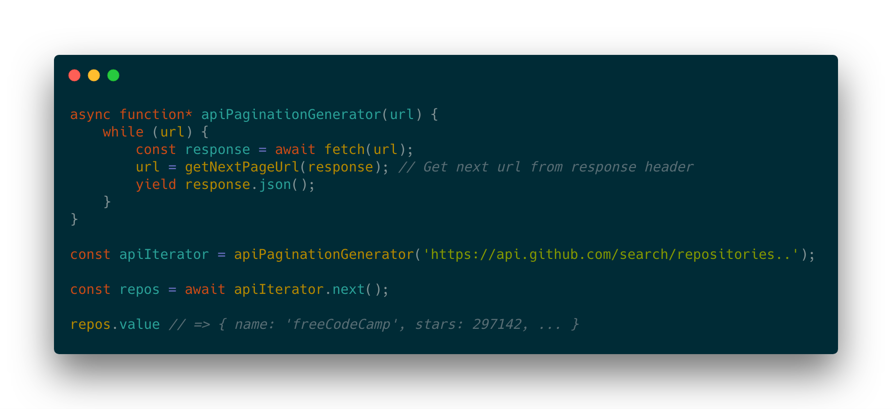

## <span class="highlight">Async Iterators & Generators in ES2018</span> Marcin Panek
- #### <span class="highlight">1. Iterators</span> - #### <span class="highlight">2. Generators</span> - #### <span class="highlight">3. Async Iterators</span> - #### <span class="highlight">4. Async Generators</span> - #### <span class="highlight">5. When to use Async Iterators?</span>
### <span class="highlight">1. Iterators</span> #### <span class="highlight">1. Iterators</span> - Iterate over <span class="highlight">`Map, Array`</span> or a custom collection that comply to the <span class="highlight">`iterator protocol`</span> - Implement <span class="highlight">`Symbol.iterator`</span> - Use <span class="highlight">`for ... of`</span> loop to iterate over collection #### <span class="highlight">1. Iterators</span> <span class="highlight">Class that implements itarator protocol</span>  #### <span class="highlight">1. Iterators</span> <span class="highlight">Looping through the iterable</span> 
### <span class="highlight">2. Generators</span> #### <span class="highlight">2. Generators</span> - Provide a higher-level abstraction to<span class="highlight"> `iterables`</span> - Preserve inner state and pause execution - Use a keyword <span class="highlight">`yield`</span> #### <span class="highlight">2. Generators</span> <span class="highlight">Fibonacci number generator</span>  #### <span class="highlight">2. Generators</span> ### <span class="highlight">Fibonacci Number Generator:</span> <button class="btn btn-2 btn-2b" onclick="nextFib()">Next</button> <h3 id="fibonacci">Start</h2>
### <span class="highlight">3. Async Iterators</span> #### <span class="highlight">3. Async Iterators</span> - An <span class="highlight">`Iterator`</span> that can handle <span class="highlight">`Promise`</span> - Implement a <span class="highlight">`Symbol.asyncIterator`</span> function instead of <span class="highlight">`Symbol.iterator`</span> - Use <span class="highlight">`for await .. of`</span> to iterate over collection #### <span class="highlight">3. Async Iterators</span> <span class="highlight">Iterate through mongoDB documents one by one</span> 
### <span class="highlight">4. Async Generators</span> #### <span class="highlight">4. Async Generators</span> - Works the same way as a generator but can handle <span class="highlight">`Promise`</span> - Provide higher level abstraction to <span class="highlight">`Async Iterators`</span> #### <span class="highlight">4. Async Generators</span> <span class="highlight">Iterate through GitHub repositories</span>  #### <span class="highlight">4. Async Generators</span> ### <span class="highlight">Async GitHub API Iteration:</span> <button class="btn btn-2 btn-2b" id="next" onclick="nextPage()">Next</button> <table> <thead> <tr> <th>Repository</th> <th style="text-align: center">⭐</th> </tr> </thead> <tbody id="content"> <tr> <td>No data</td> </tr> </tbody> </table>
### <span class="highlight">5. When to use Async Iterators?</span> #### <span class="highlight">5. When to use Async Iterators?</span> ### Pros: - They simplify the code - Use when readability is key #### <span class="highlight">5. When to use Async Iterators?</span> ### Cons: - Not as performant as other solutions ex. RxJS
## <span class="highlight">Thank You For Attention</span> Presentation link: [goo.gl/P8fBEQ](http://goo.gl/P8fBEQ)